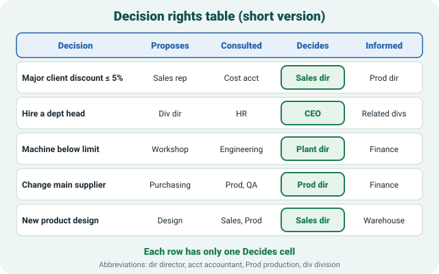

K8 · Teamwork and respecting differences › Level 5 Leading
Design decision rights between divisions
This lesson completes Sheet 5: Decision rights table. Print template. It reuses the 4 levels of autonomy from Delegate and follow up (N5), applied to whole divisions instead of one person.
1. Objectives
- Build a decision rights table for 5 common decisions, each with exactly one decider.
- Identify 2 bottlenecks caused by structure, using 3 warning signs.
2. Retrieval warm-up
- What are the 5 parts of a one-page direction note?
- Why must middle managers know before their staff?
Answers
- Why now; where we are going; what we will not do; what changes for each group; what we do not know yet.
- So they can answer their team's questions and pass the message on accurately.
Review: Communicating across levels.
3. Explanation
In large organisations, much work is slow not because people are weak. It is slow because nobody is sure who may decide. Files go round several divisions, then pile up on the CEO's desk.
Four roles in a decision.
- Proposes: prepares the options, with data.
- Consulted: has expertise or is affected. Their view must be heard before the decision.
- Decides: makes the call and is accountable. Only one person.
- Informed: needs to know the outcome to do their own work.
This split is similar to common role charts such as RACI. The labels do not matter. What matters is that each decision has only one decider.

Thresholds. For the same type of decision, the decider can change with the amount of money or risk. For example: below a certain amount, the plant director decides; above it, the CEO decides. The organisation sets its own amounts, within its charter and internal rules.
Three signs of a bottleneck.
Signs that structure is causing a bottleneck
- Long waitsRoutine decisions take many days.
- Several decidersTwo divisions both think they can decide, or both wait for the other.
- Pushed upwardsEveryday matters keep going up to the leadership team.
When you see a sign, do not just tell people to work faster. Fix the rights table: move the decision closer to the information, or name a single decider again.
4. Workplace example
Hypothetical scenario. A furniture exporter has two divisions: sales and production.
A major client asks for a 5% discount. Sales says pricing is its decision. Production says prices affect costs, so it must be asked. The file goes back and forth for two weeks, then up to the CEO. The client has ordered elsewhere.
The CEO, Peter, meets the two division directors. They build Sheet 5 for 5 common decisions.
For a major client discount: proposes: sales team leader. Consulted: cost accountant, within 1 day. Decides: sales director, for discounts up to 5%. Above 5%, the CEO decides. Informed: production director.
Three months later, the time to answer clients on price falls from about 2 weeks to 2–3 days.
Why this works: production is still consulted but does not hold the final say. There is a clear threshold. The CEO only receives decisions above it.
5. Practice
Hypothetical scenario. You are COO of a chain of mid-range hotels. Changing the linen supplier currently involves 3 departments giving views, and nobody making the call.
Write one row of Sheet 5 for this decision. Note 1 bottleneck sign you see.
Hint 1
Who knows about linen quality day to day? Who knows about price?
Hint 2
People who are consulted need a deadline to reply. Otherwise consulting turns into waiting.
Model answer
- Proposes: head of housekeeping, who uses the linen every day.
- Consulted: purchasing on price and contract; finance on budget. Reply within 3 days.
- Decides: the chain's operations director.
- Informed: each hotel's general manager.
- Sign: several deciders. Three departments give views but nobody makes the call.
(The details are hypothetical.)
6. Self-check
Choose an answer. Every option has an explanation.
Question 1. The rights table says the finance director and sales director jointly decide customer credit limits. What is the problem?
-
Not quite. Two deciders often wait for each other, or nobody is accountable when it goes wrong.
-
Correct. Correct. Each decision has one decider. The other is still heard before the call.
-
Not quite. Pushing upwards is a bottleneck sign. Decisions should sit close to the information.
Question 2. Each week, the CEO receives 20 small materials purchases to approve. What sign is this?
-
Not quite. Being hands-on with small matters takes time from organisation-level work.
-
Correct. Correct. When everyday matters keep reaching the leadership team, structure is causing a bottleneck.
-
Not quite. There is no evidence about the people. First check whether the rights table lets them decide.
Question 3. Legal is consulted on every contract, but usually replies after 2 weeks. How do you fix it?
-
Not quite. Legal has necessary expertise. Skipping it increases legal risk.
-
Correct. Correct. Consulting needs a deadline. A threshold lets legal focus on the risky work.
-
Not quite. Legal advises on the law. The business decision should stay with whoever owns the result.
Question 4. You want to set a threshold up to which the plant director may approve machine purchases. What must you check against?
-
Not quite. Useful for reference, but not enough. Each organisation has its own charter and rules.
-
Correct. Correct. The rights table must stay within the authority the charter and rules allow.
-
Not quite. A manager's authority is limited by the charter. Going beyond it is a risk.
7. Reflection
- Which decision in your organisation keeps being pushed up to you, even though people below have enough information to decide?
- Which decision currently has two people who each think they make the call?
8. Real-world application
In the next 7 days, choose 5 common decisions between divisions. Build Sheet 5 with the division heads. Send the table to those involved, and review it after a month.
Level of evidence. The four roles are a common way of splitting roles in management, as in a RACI chart. The site has found no peer-reviewed research comparing how well such charts work. Thresholds must fit the organisation's charter and internal rules.
9. Metadata
| skill | K8 · Teamwork and respecting differences |
|---|---|
| level | Level 5 · Leading |
| group | N6 |
| framework_map | UK Civil Service Success Profiles: Working Together; APS Integrated Leadership System: Cultivates productive working relationships; Achieves results; SkillsFuture CCS: Collaboration; CSfW: 2b Connect and work with others; WEF: Leadership and social influence (reference only) |
| original | Vietnamese version |
| updated | 2026-11-14 |
Finish the lesson
Mark it as done and the site suggests reviews after 1, 3 and 7 days. The data stays on your device only.
Suggested reviews: